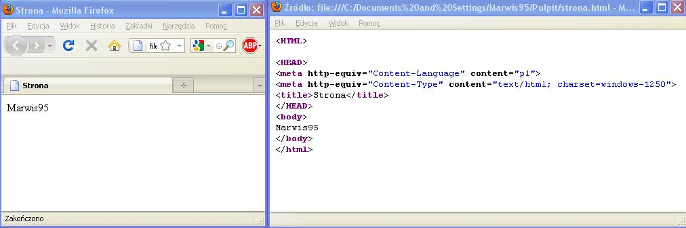

Strony internetowe robi siê w notatniku.
UWAGA!!! Ja w mojej stonie wszystkie <> zast¹pie ( ),
bo jak dam <> to notatnik uzna to za polecenie i
nie bêdzie siê to wyœwietla³o na stronie.
Robisz tak:
1.'Odpalasz' notatnik.
2.Wpisujesz coœ takiego:
(HTML)
(HEAD)
(meta http-equiv="Content-Language" content="pl")
(meta http-equiv="Content-Type" content="text/html; charset=windows-1250")
(title)Tu_wpisz_tytu³_strony(/title)
(/HEAD)
(body)
Je¿eli chcesz to w orginale to poka¿ Ÿród³o i skopiuj.
Mo¿na uznaæ, ¿e to jest szablon.
3.Plik->zapisz jako
Nazwa pliku: *.html.
Zapisz typ jako: Wszystkie pliki
4.To ju¿ jest strona, jek chcesz coœ zmieniæ,
to kliknij PPM na stronie i naciœnij poka¿ Ÿród³o.
Polecam œci¹gn¹æ sobie notepad++, który zaznacza na kolorowo elementy sk³adni.
Jest on darmowy